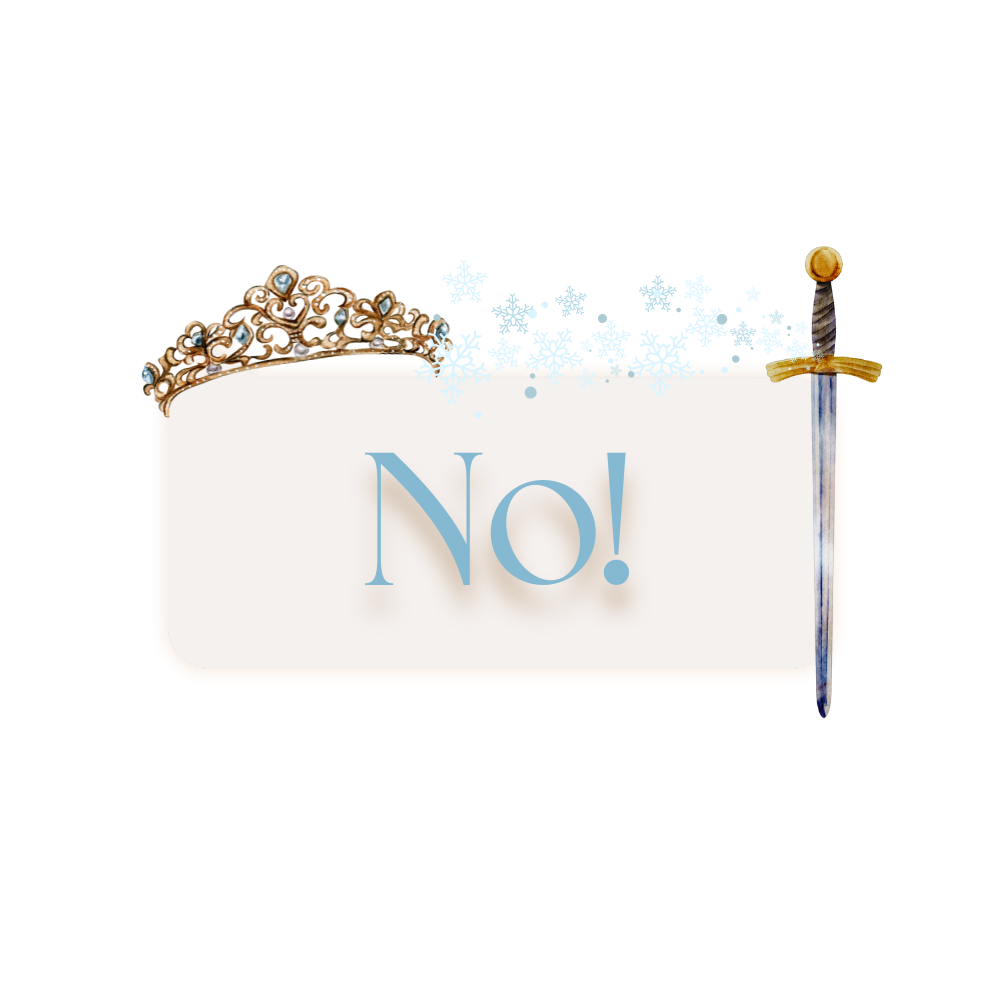

In the magical kingdom of Arendelle, two royal sisters,
Elsa and Anna, lived happily together until Elsa discovered
she had the power to control ice and snow. Fearing her abilities,
Elsa kept them a secret, even from Anna. One day, during
her coronation as queen, Elsa accidentally revealed her powers
and fled into the mountains, unintentionally plunging the
kingdom into an endless winter.
Worried for her sister and determined to bring back
summer, Anna bravely set out to find Elsa.
Along her journey, Anna met a rugged ice harvester
named Kristoff, his loyal reindeer Sven, and a
cheerful snowman named Olaf. Together, they faced
fierce snowstorms, magical creatures, and dangerous
obstacles.
Do you wish to continue?
